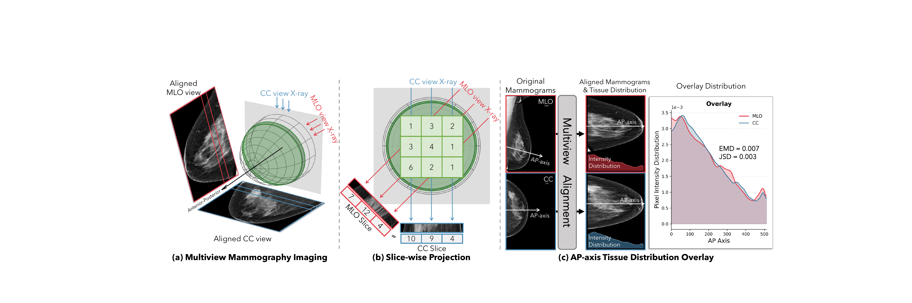
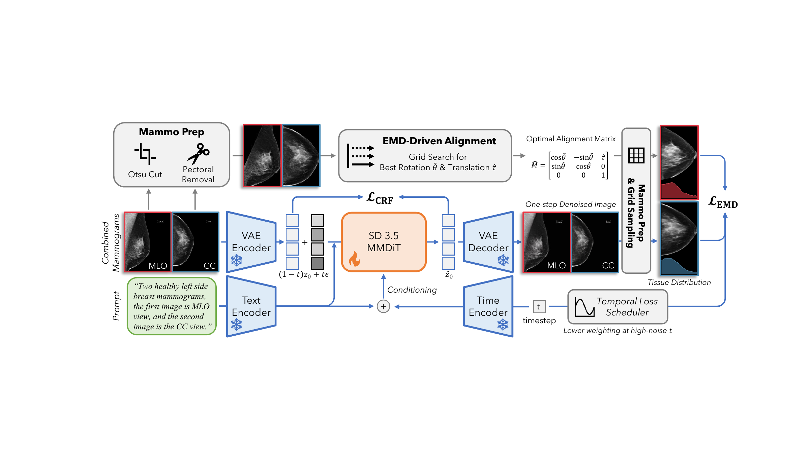
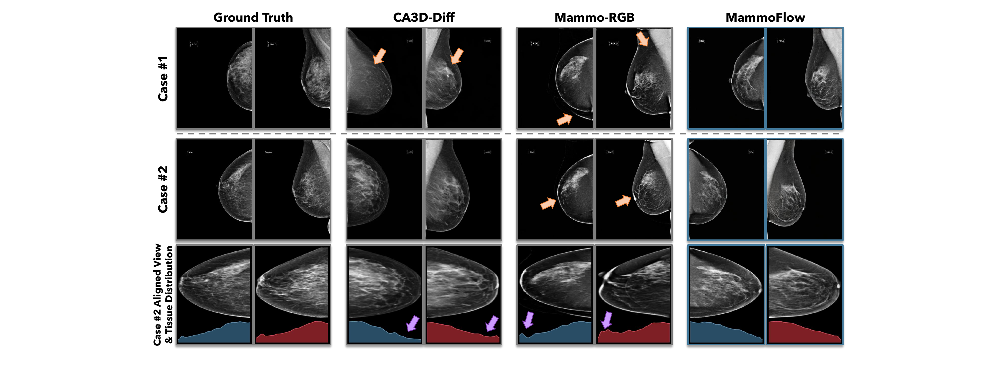

Conditional flow matching
Paired CC/MLO mammograms are concatenated and encoded into a latent path between image data and Gaussian noise. The model predicts the velocity toward clean mammogram pairs.
MICCAI 2026
Department of Biomedical Engineering and Department of Radiology & Biomedical Imaging, Yale University
MammoFlow generates paired CC and MLO mammograms from noise while preserving cross-view tissue correspondence through an EMD-driven anatomical consistency loss.

Multiview mammography relies on paired craniocaudal (CC) and mediolateral oblique (MLO) views to provide complementary projections of a 3D breast volume, enabling precise anomaly localization. However, acquiring high-quality, balanced datasets remains challenging for deep learning applications.
We propose MammoFlow, a method for synthesizing multiview mammograms by leveraging the inherent geometric relationship between CC and MLO views. An alignment module searches a compact affine transformation subspace to establish anatomical correspondence, and a pixel-space Earth Mover's Distance (EMD) loss encourages generated pairs to share physically plausible anteroposterior tissue distributions.
Integrated into a pretrained flow matching model, MammoFlow produces high-fidelity paired mammograms, passes expert radiologist evaluation, and improves downstream classification AUC by up to 5% when synthetic malignant pairs are added to training.
Training uses real paired views to compute an anatomical alignment prior. Inference only requires Gaussian noise and a prompt.

Paired CC/MLO mammograms are concatenated and encoded into a latent path between image data and Gaussian noise. The model predicts the velocity toward clean mammogram pairs.
A compact search over MLO rotation and horizontal translation aligns AP-axis tissue distributions with the CC view while accounting for pectoral masking.
A differentiable EMD loss penalizes cross-view tissue displacement in decoded one-step reconstructions, with a cosine schedule that emphasizes low-noise structure.
MammoFlow improves both image fidelity and multiview correspondence across CSAW, VinDr-Mammo, and RSNA.
| Method | CSAW | VinDr | RSNA | |||||||||
|---|---|---|---|---|---|---|---|---|---|---|---|---|
| FID | FrD | Delta EMD | Delta JSD | FID | FrD | Delta EMD | Delta JSD | FID | FrD | Delta EMD | Delta JSD | |
| GT oracle | 8.89 | 3.02 | - | - | 8.36 | 5.42 | - | - | 9.76 | 12.0 | - | - |
| CA3D-Diff* | 63.3 | 8.72 | 14.12 | 16.89 | 70.5 | 6.72 | 173.83 | 498.86 | 64.5 | 8.73 | 37.20 | 90.98 |
| Mammo-RGB | 88.6 | 14.9 | 60.67 | 188.53 | 102.8 | 21.5 | 33.01 | 49.57 | 148.6 | 15.1 | 15.43 | 20.98 |
| Vanilla | 73.4 | 17.7 | 10.82 | 68.52 | 70.5 | 48.8 | 18.37 | 54.61 | 66.3 | 16.4 | 7.75 | 28.86 |
| MammoFlow | 53.3 | 6.60 | 1.08 | 9.57 | 67.5 | 12.4 | 4.19 | 15.22 | 65.4 | 12.7 | 2.73 | 33.48 |
*CA3D-Diff requires a ground-truth reference image. Lower is better for FID, FrD, Delta EMD, and Delta JSD.
MammoFlow images rated as real
Generated pairs judged anatomically paired
Generated views preserve aligned AP-axis tissue distributions and reduce cross-view structure mismatch relative to baselines.

The repository contains data preprocessing, SD3.5 multiview training, generation inference, alignment evaluation, and downstream classification scripts.
Research use only. MammoFlow is not a medical device and must not be used for clinical diagnosis or treatment decisions.
git clone https://github.com/XYPB/MammoFlow.git
cd MammoFlow
conda env create -f environment.yml
conda activate mammoflow@inproceedings{mammoflow2026,
title = {MammoFlow: Multiview Mammogram Synthesis with Anatomically Consistent Flow Matching},
author = {Du, Yuexi and Barrientos, Leya and Sheiman, Laura and Lewin, John and Tagare, Hemant and Dvornek, Nicha C.},
booktitle = {International Conference on Medical Image Computing and Computer Assisted Intervention},
year = {2026}
}